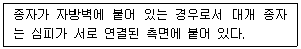
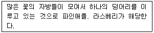
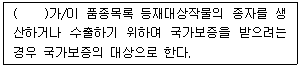
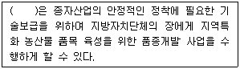
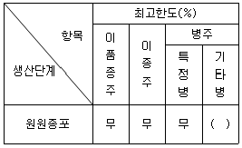
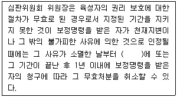
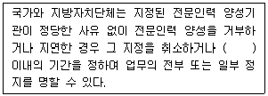
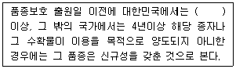

종자기사 (2021-08-14 기출문제)
1과목: 종자생산학
1. 층적저장과 가장 가까운 의미를 갖는 것은?
- 발아억제를 위한 건조처리
- 휴면타파를 위한 저온처리
- 발아율 향상을 위한 후숙처리
- 발아촉진을 위한 생장조절제 처리
(정답률: 74%)

2. 식물의 종자를 구성하고 있는 기관은?
- 전분, 단백질, 배유
- 배, 전분, 초엽
- 종피, 배유, 배
- 단백질, 종피, 초엽
(정답률: 93%)
3. 자식성 작물의 종자생산 관리체계에서 증식체계로 옳은 것은?
- 기본식물 → 원원종 → 원종 → 보급종
- 보급종 → 기본식물 → 원원종 → 원종
- 보급종 → 원원종 → 원종 → 기본식물
- 원종 → 보급종 → 원원종 → 기본식물
(정답률: 90%)
4. 무의 채종재배를 위한 포장의 격리거리는 얼마인가?
- 100m 이상
- 250m 이상
- 500m 이상
- 1000m 이상
(정답률: 73%)
5. 다음에서 설명하는 것은?

- 측막태좌
- 중축태좌
- 중앙태좌
- 이형태좌
(정답률: 90%)
6. 저장종자가 발아력을 잃게 되는 원인으로 옳지 않은 것은?
- 종자 단백질의 변성
- 효소의 활성 증진
- 호흡에 의한 종자 저장물질 소모
- 저장 기간 중 저장고 온도와 습도의 상승
(정답률: 85%)
7. 작물생식에 있어서 아포믹시스를 옳게 설명한 것은?
- 수정에 의한 배 발달
- 수정없이 배 발달
- 세포 융합에 의한 배 발달
- 배유 배양에 의한 배 발달
(정답률: 88%)
8. 식물의 화아가 유도되는 생리적 변화에 영향을 미치는 요인으로 가장 거리가 먼 것은?
- 춘화처리
- 일장효과
- 토양수분
- C/N율
(정답률: 80%)
9. 종자 프라이밍의 주 목적으로 옳은 것은?
- 종피에 함유된 발아억제물질의 제거
- 종자전염 병원균 및 바이러스 방제
- 유묘의 양분흡수 촉진
- 종자발아에 필요한 생리적인 준비를 통한 발아 속도와 균일성 촉진
(정답률: 81%)
10. 수확적기로 벼의 수확 및 탈곡 시에 기계적 손상을 최소화 할 수 있는 종자 수분함량은?
- 14% 이하
- 17~23%
- 30~35%
- 50% 이상
(정답률: 80%)
11. 다음 중 뇌수분을 이용하여 채종하는 작물은?
- 벼
- 배추
- 당근
- 아스파라거스
(정답률: 77%)
12. 다음 설명에 해당하는 것은?

- 복과
- 위과
- 취과
- 단과
(정답률: 83%)
13. 옥수수 종자는 수정 후 며칠쯤이 되면 발아율이 최대에 달하는가?
- 약 13일
- 약 21일
- 약 31일
- 약 43일
(정답률: 70%)
14. 다음 중 무배유 종자에 해당하는 것은?
- 보리
- 상추
- 밀
- 옥수수
(정답률: 78%)
15. 유한화서이면서 작살나무처럼 2차지경 위에 꽃이 피는 것을 무엇이라 하는가?
- 두상화서
- 유이화서
- 원추화서
- 복집산화서
(정답률: 74%)
16. 다음 중 발아촉진에 효과가 가장 큰 물질은?
- gibberellin
- abscisic acid
- parasorbic acid
- momilactone
(정답률: 88%)
17. 종자의 생성 없이 과실이 자라는 현상은?
- 단위결과
- 단위생식
- 무배생식
- 영양결과
(정답률: 79%)
18. 다음 중 호광성 종자인 것은?
- 토마토
- 가지
- 상추
- 호박
(정답률: 82%)
19. 광합성 산물이 종자로 전류되는 이동형태는?
- amylose
- stachyose
- sucrose
- raffinose
(정답률: 82%)
20. 한천배지검정에서 Sodium Hypochlorite(NaOCI)를 이용한 종자의 표면 소독 시 적정농도와 침지시간으로 가장 적당한 것은?
- 1%, 1분
- 10%, 10분
- 20%, 30분
- 40%, 50분
(정답률: 72%)
2과목: 식물육종학
21. 유전자형이 이형접합 상태에서만 나타나는 분산은?
- 상가적 분산
- 우성적 분산
- 상위적 분산
- 환경 분산
(정답률: 55%)
22. 순계 두 품종 사이의 교배에 의하여 생겨난 F1 식물체(AaBbCcDdEe)가 생산하는 화분의 종류는? (단, 5개의 유전자는 서로 독립 유전을 한다고 가정함)
- 5개
- 25개
- 32개
- 64개
(정답률: 75%)
23. 다음 중 자식성 작물에서 유전력이 높은 형질의 개량에 가장 많이 쓰이는 육종방법은?
- 계통육종법
- 집단육종법
- 잡종강세육종법
- 배수성육종법
(정답률: 70%)
24. 다음 중 하디-바인베르크 법칙의 전제조건으로 옳지 않은 것은?
- 집단 내에 유전적 부동이 있어야 한다.
- 다른 집단과 유전자 교류가 없어야 한다.
- 집단 내에서 자연적 선택이 일어나지 않아야 한다.
- 집단 내에 돌연변이가 일어나지 않아야 한다.
(정답률: 61%)
25. 바빌로프의 유전자 중심지설에서 감자, 토마토, 고추 작물의 재배기원 중심지는?
- 지중해 연안지구
- 근동지구
- 남미지구
- 중앙아메리카지구
(정답률: 71%)
26. 토마토의 웅성불임은 세포질은 관여하지 않고 핵유전자가 열성의 msms일 때 나타난다. 웅성불임계통을 웅성불임 유지친과 교배하여 얻는 후대 중에서 웅성불임 개체는 최고 몇 %를 얻을 수 있는가?
- 100%
- 75%
- 50%
- 25%
(정답률: 60%)
27. 피자식물의 중복수정에 의해 형성되는 배유의 염색체 수는?
- 1n
- 2n
- 3n
- 4n
(정답률: 82%)
28. 배추, 무 등 호냉성 채소의 주년생산은 어떤 형질의 개량에 의해 가능해 진 것인가?
- 저온 감응성
- 내습성
- 내도복성
- 내염성
(정답률: 84%)
29. 새로 육성한 우량품종의 순도를 유지하기 위하여 육종가 또는 육종기관이 유지·관리하고 있는 종자는?
- 보급종 종자
- 원종 종자
- 원원종 종자
- 기본식물 종자
(정답률: 62%)
30. 세포질-유전자적 웅성불임성에 있어서 불임주의 유지친이 갖추어야 할 유전적 조건으로 옳은 것은?
- 핵내의 불임 유전자 조성이 웅성불임친과 동일해야 한다.
- 웅성불임친과 교배 시에 강한 잡종강세 현상이 일어나야 한다.
- 핵내의 모든 유전자 조성이 웅성불임친과 동일하지 않아야 한다.
- 웅성불임친에는 없는 내병성 유전인자를 가져야 한다.
(정답률: 62%)
31. 두 유전자가 연관되었는지를 알아보기 위하여 주로 쓰는 방법은?
- 타가수정
- 원형질융합
- 속간교배
- 검정교배
(정답률: 79%)
32. 다음 중 우장춘 박사의 작물육종 업적으로 옳은 것은?
- 배추와 양배추간의 종간잡종 획득
- 속간 잡종을 이용한 담배의 내병성 품종 육성
- 콜히친에 의한 C-mitosis 발생 기작 규명
- 방사선을 이용한 옥수수의 돌연변이체 획득
(정답률: 70%)
33. 여교잡 육종법에 대한 설명으로 옳지 않은 것은?
- 목표형질 이외 다른 형질의 개량이 용이함
- 재래종의 내병성을 이병성 품종에 도입하는 경우 효과적임
- 복수의 유전자 집적이 가능함
- 비실용품종의 한 가지 우수한 특성을 도입하기 유용함
(정답률: 60%)
34. 잡종 집단에서 선발차가 50 이고, 유전획득량이 25 일 때의 유전력(%)은?
- 0.2
- 0.5
- 20
- 50
(정답률: 60%)
35. 600개의 염기로 구성된 유전자의 DNA단편이 단백질로 합성되는 과정에서 몇 개의 코돈을 형성하는가?
- 100
- 200
- 300
- 600
(정답률: 65%)
36. 잡종강세육종에서 일반조합능력과 특정조합 능력을 함께 검정할 수 있는 것은?
- 단교배
- 톱교배
- 이면교배
- 3원교배
(정답률: 49%)
37. 동질배수체의 일반적인 특징에 대한 설명으로 옳지 않은 것은?
- 저항성이 증대된다.
- 핵과 세포가 커진다.
- 착과수가 많아진다.
- 영양기관의 생육이 증진된다.
(정답률: 61%)
38. 일장효과의 이용에 대한 설명으로 틀린 것은?
- 단일성 작물에 한계일장 이상의 일장처리를 하면 개화가 지연된다.
- 단일성 작물에 한계일장 이하의 일장처리를 하면 개화가 촉진된다.
- 장일성 작물에 한계일장 이하의 일장처리를 하면 개화가 촉진된다.
- 장일성 작물에 한계일장 이상의 일장처리를 하면 개화가 촉진된다.
(정답률: 75%)
39. 동질4배체의 F1(AAaa)을 자가수정하여 만들어진 F2의 표현형의 분리비로 옳은 것은? (단, A는 a에 우성이다.)
- 우성 : 열성 = 1 : 1
- 우성 : 열성 = 3 : 1
- 우성 : 열성 = 15 : 1
- 우성 : 열성 = 35 : 1
(정답률: 49%)
40. 집단선발법에 대한 설명으로 옳지 않은 것은?
- 집단속에서 선발한 우량개체 간에 타식 시킨다.
- 집단속에서 선발한 우량개체를 자식시켜 나간다.
- 어느 정도 이형접합성을 유지해 나가도록 할 필요가 있다.
- 선발한 우량개체를 방임상태로 수분시켜 채종한다.
(정답률: 54%)
3과목: 재배원론
41. 다음 중 인과류에 해당하는 것은?
- 앵두
- 포도
- 감
- 사과
(정답률: 74%)
42. 벼, 보리 등 자가수분작물의 종자갱신방법으로 옳은 것은? (단, 기계적 혼입의 경우는 제외한다.)
- 자가에서 정선하면 종자교환 할 필요가 없다.
- 원종장에서 보급종을 3~4년마다 교환한다.
- 원종장에서 10년마다 교환한다.
- 작황이 좋은 농가에서 15년마다 교환한다.
(정답률: 76%)
43. 다음 중 방사선을 육종적으로 이용할 때에 대한 설명으로 옳지 않은 것은?
- 주로 알파선을 조사하여 새로운 유전자를 창조한다.
- 목적하는 단일유전자나 몇 개의 유전자를 바꿀 수 있다.
- 연관군 내의 유전자를 분리할 수 있다.
- 불화합성을 화합성으로 변화시킬 수 있다.
(정답률: 68%)
44. 고구마의 저장온도와 저장습도로 가장 적합한 것은?
- 1~4℃, 60~70%
- 5~7℃, 70~80%
- 13~15℃, 80~90%
- 15~17℃, 90% 이상
(정답률: 59%)
45. 무기성분의 산화와 환원형태로 옳지 않은 것은?
- 산화형: SO4, 환원형: H2S
- 산화형: NO3, 환원형: NH4
- 산화형: CO2, 환원형: CH4
- 산화형: Fe++, 환원형: Fe+++
(정답률: 66%)
46. 다음 중 세포의 신장을 촉진시키며 굴광현상을 유발하는 식물호르몬은?
- 옥신
- 지베렐린
- 사이토카이닌
- 에틸렌
(정답률: 73%)
47. 영양번식을 위해 엽삽을 이용하는 것은?
- 베고니아
- 고구마
- 포도나무
- 글라디올러스
(정답률: 70%)
48. 화곡류에서 잎을 일어서게 하여 수광율을 높이고, 증산을 줄여 한해 경감 효과를 나타내는 무기성분으로 옳은 것은?
- 니켈
- 규소
- 셀레늄
- 리튬
(정답률: 83%)
49. 건물생산이 최대로 되는 단위면적당 군락엽면적을 뜻하는 용어는?
- 최적엽면적
- 비엽면적
- 엽면적지수
- 총엽면적
(정답률: 66%)
50. 토양의 pH가 1단위 감소하면 수소이온의 농도는 몇 % 증가하는가?
- 1 %
- 10 %
- 100 %
- 1000 %
(정답률: 65%)
51. 다음 중 봄철 늦추위가 올 때 동상해의 방지책으로 옳지 않은 것은?
- 발연법
- 송풍법
- 연소법
- 냉수온탕법
(정답률: 71%)
52. 다음 중 하고현상이 가장 심하지 않은 목초는?
- 티머시
- 켄터키브루그래스
- 레드클로버
- 화이트클로버
(정답률: 55%)
53. 다음 중 질산태질소에 관한 설명으로 옳은 것은?
- 산성토양에서 알루미늄과 반응하여 토양에 고정되어 흡수율이 낮다.
- 작물의 이용형태로 잘 흡수·이용하지만 물에 잘 녹지 않으며 지효성이다.
- 논에서는 탈질작용으로 유실이 심하다.
- 논에서 환원층에 주면 비효가 오래 지속된다.
(정답률: 63%)
54. 질소농도가 0.3%인 수용액 20L를 만들어서 엽면시비를 할 때 필요한 요소비료의 양은? (단, 요소비료의 질소함량은 46% 이다.)
- 약 28g
- 약 60g
- 약 77g
- 약 130g
(정답률: 52%)
55. 작물이 정상적으로 생육하는 토양의 유효수분 범위(pF)는?
- 1.8~3.0
- 18~30
- 180~300
- 1800~3000
(정답률: 72%)
56. 식물의 무기영양설을 제창한 사람은?
- 바빌로프
- 캔돌레
- 린네
- 리비히
(정답률: 64%)
57. 다음 중 벼 장해형 냉해에 가장 민감한 시기로 옳은 것은?
- 유묘기
- 감수분열기
- 최고분열기
- 유숙기
(정답률: 75%)
58. 다음 중 연작 장해가 가장 심한 작물은?
- 당근
- 시금치
- 수박
- 파
(정답률: 71%)
59. 다음 중 파종량을 늘려야 하는 경우로 가장 적합한 것은?
- 단작을 할 때
- 발아력이 좋을 때
- 따뜻한 지방에 파종할 때
- 파종기가 늦어질 때
(정답률: 75%)
60. 다음 중 영양번식을 하는데 발근 및 활착을 촉진하는 처리가 아닌 것은?
- 황화처리
- 프라이밍
- 환상박피
- 옥신류처리
(정답률: 59%)
4과목: 식물보호학
61. 마늘의 뿌리를 가해하는 해충은?
- 고자리파리
- 점박이응애
- 왕귀뚜라미
- 아이노각다귀
(정답률: 68%)
62. 병원균이 균핵 형태로 종자와 섞여 있다가 전염되는 병은?
- 보리 깜부기병
- 호밀 맥각병
- 벼 키다리병
- 벼 도열병
(정답률: 46%)
63. 곤충의 감각기에 대한 설명으로 옳지 않은 것은?
- 곤충의 감각에는 청각, 후각, 촉각, 시각 등이 있다.
- 각종 화학물질을 탐지할 수 있는 화학감각기가 잘 발달되어 있다.
- 곤충은 소리를 탐지할 수 없다.
- 대부분의 곤충은 적색을 감지하지 못한다.
(정답률: 75%)
64. 고구마무름병균과 귤푸른곰팡이병의 공통된 기주침입 방법은?
- 자연개구부를 통한 침입
- 상처를 통한 침입
- 각피를 통한 침입
- 특수기관을 통한 침입
(정답률: 70%)
65. 벼의 줄무늬잎마름병의 매개충은?
- 벼멸구
- 애멸구
- 흰등멸구
- 복숭혹진딧물
(정답률: 68%)
66. 식물병을 일으키는 비기생성의 원인으로 가장 거리가 먼 것은?
- 양분 부족
- 유해 물질
- 바이로이드
- 산업폐기물
(정답률: 69%)
67. 농약의 구비조건이 아닌 것은?
- 약해가 없을 것
- 가격이 저렴할 것
- 약효가 확실할 것
- 타약제와 혼용 시 물리적 작용이 일어날 것
(정답률: 80%)
68. 사용목적에 따른 농약의 분류에서 종류가 다른 것은?
- 접촉독제
- 유인제
- 훈증제
- 종자소독제
(정답률: 67%)
69. 식물을 보호하기 위한 포장위생 방법으로 옳지 않은 것은?
- 병든 식물의 제거
- 윤작
- 병환부의 제거
- 수확 후 이병잔재물의 제거
(정답률: 75%)
70. 식물병 표징의 특징이 다른 하나는?
- 흰가루병
- 녹병
- 균핵병
- 흰녹가루병
(정답률: 62%)
71. 밑줄기녹병균의 중간기주는?
- 향나무
- 밀
- 매자나무
- 모과나무
(정답률: 51%)
72. 프루텔고치벌이 기생하는 기주곤충은?
- 파밤나방
- 담배나방
- 배추좀나방
- 담배거세미나방
(정답률: 55%)
73. 도열병균의 포자가 발아한 후 잎표피를 침입하기 위하여 형성하는 기구는?
- 부착기
- 발아관
- 흡기
- 제2차균사
(정답률: 60%)
74. 곤충의 특징이 아닌 것은?
- 머리에는 한 쌍의 촉각과 여러 모양으로 변형된 입틀(구기)을 가지고 있다.
- 폐쇄 혈관계를 가지고 있다.
- 호흡은 잘 발달된 기관계를 통해서 이루어진다.
- 외골격으로 이루어져 있다.
(정답률: 64%)
75. 후배자 발육에 있어 날개가 없는 원시적인 곤충들에서 볼 수 있고 탈피만 일어나는 변태는?
- 완전변태
- 불완전변태
- 과변태
- 무변태
(정답률: 57%)
76. 곤충의 가슴에 대한 설명으로 옳지 않은 것은?
- 두 쌍의 날개가 있는 경우, 앞가슴과 가운데가슴에 각각 한 쌍씩 있다.
- 앞가슴, 가운데가슴, 뒷가슴의 세부분으로 구성된다.
- 파리목 곤충은 뒷날개가 퇴화되어 있다.
- 각 마디마다 한 쌍씩의 다리가 있다.
(정답률: 63%)
77. 식물병을 일으키는 요인 중 전염성 병원이 아닌 것은?
- 항생제
- 바이로이드
- 스피로플라스마
- 파이토플라스마
(정답률: 74%)
78. 해충 종합관리에 대한 설명으로 옳지 않은 것은?
- 이용할 수 있는 모든 방제수단을 조화롭게 활용한다.
- 작물 재배지 내의 모든 해충을 박멸한다.
- 해충밀도를 경제적 피해허용수준 이하로 유지한다.
- 해충방제의 부작용을 최소한으로 줄인다.
(정답률: 78%)
79. 식물병원 바이러스에 대한 설명으로 옳지 않은 것은?
- 인공배지에 배양할 수 없다.
- 핵산은 DNA로만 구성되어 있다.
- 주로 핵산과 단백질로 되어 있다.
- 식물에 병을 일으키는 능력을 가진다.
(정답률: 73%)
80. 식물 바이러스에 대한 설명으로 옳지 않은 것은?
- 식물 세균보다 크기가 큰 병원체이다.
- 초현미경적 병원체이다.
- 살아있는 세포에서만 증식이 가능하다.
- 핵산의 주위를 외피단백질이 둘러 싸고 있다.
(정답률: 76%)
5과목: 종자관련법규
81. 식물신품종보호법상 우선권을 주장하려는 자는 최초의 품종보호 출원일 다음 날부터 얼마 이내에 품종보호 출원을 하지 아니하면 우선권을 주장할 수 없는가?
- 3개월 이내
- 6개월 이내
- 9개월 이내
- 1년 이내
(정답률: 51%)
82. 종자산업법상 출입, 조사ㆍ검사 또는 수거를 거부ㆍ방해 또는 기피한 자의 과태료는?
- 5백만원 이하의 과태료
- 1천만원 이하의 과태료
- 2천만원 이하의 과태료
- 5천만원 이하의 과태료
(정답률: 73%)
83. 종자검사요령상 종자검사 순위도에서 종자검사 시 가장 우선 실시하는 것은?
- 발아세검사
- 농약검사
- 발아율검사
- 수분검사
(정답률: 56%)
84. 종자검사요령상 시료추출에서 수수의 순도검사 최소 중량은?
- 25g
- 50g
- 90g
- 120g
(정답률: 39%)
85. 종자산업법상 국가보증의 대상에 대한 내용이다. ( )에 옳지 않은 내용은?

- 군수
- 시장
- 도지사
- 각 지역 국립 대학교 연구원
(정답률: 73%)
86. 종자산업법상 육묘업 등록이 취소된 자는 취소된 날부터 몇 년이 지나지 아니하면 육묘헙을 다시 등록할 수 없는가?
- 2년
- 3년
- 5년
- 7년
(정답률: 66%)
87. 식물신품종보호법상 품종보호권의 설정등록을 받으려는 자나 품종보호권자는 품종보호료 납부기간이 지난 후에도 얼마 이내에는 품종보호료를 납부할 수 있는가?
- 6개월
- 9개월
- 12개월
- 2년
(정답률: 70%)
88. 종자산업법상 지방자치단체의 종자산업 사업수행에 대한 내용이다. ( )에 알맞은 내용은?

- 농림축산식품부장관
- 환경부장관
- 농업기술실용화재단장
- 농촌진흥청장
(정답률: 68%)
89. 종자산업법상 품종목록 등재의 유효기간은 등재한 날이 속한 해의 다음 해부터 몇 년 까지로 하는가?
- 3년
- 5년
- 7년
- 10년
(정답률: 69%)
90. 종자산업법상 종자업 등록의 취소 등에서 구청장은 종자산업자가 종자업 등록을 한 날부터 1년 이내에 사업을 시작하지 아니하거나 정당한 사유 없이 1년 이상 계속하여 휴업한 경우에는 종자업 등록을 취소하거나 얼마 이내의 기간을 정하여 영업의 전부 또는 일부의 정지를 명할 수 있는가?
- 1개월
- 3개월
- 6개월
- 9개월
(정답률: 69%)
91. 종자관리요강상 과수 포장검사에 대한 내용이다. ( )에 알맞은 내용은?

- 1.0
- 2.0
- 3.0
- 4.0
(정답률: 51%)
92. 식물신품종보호법상 과수와 임목의 경우 품종보호권의 존속기간은 품종보호권이 설정등록된 날부터 몇 년으로 하는가?
- 25년
- 20년
- 15년
- 10년
(정답률: 73%)
93. 식물신품종보호법상 절차의 무효에 대한 내용이다. ( )에 알맞은 내용은?

- 7일 이내
- 14일 이내
- 30일 이내
- 50일 이내
(정답률: 54%)
94. 종자검사요령상 포장검사 병주 판정기준에서 참깨의 기타병은?
- 엽고병
- 균핵병
- 갈반병
- 풋마름병
(정답률: 41%)
95. 종자관리요강상 수입적응성시험의 대상작물 및 실시기관에서 배추 작물의 실시기관은?
- 농업기술실용화재단
- 한국종자협회
- 한국생약협회
- 농업협동조합중앙회
(정답률: 59%)
96. 종자산업법상 전문인력의 양성에 대한 내용이다. ( )에 알맞은 내용은?

- 3개월
- 6개월
- 9개월
- 12개월
(정답률: 45%)
97. 종자관리요강상 규격묘의 규격기준에서 통나무 묘목의 접목묘 길이(cm)는? (단, 묘목의 길이는 지제부에서 묘목선단까지의 길이 이다.)
- 20 이상
- 30 이상
- 40 이상
- 50 이상
(정답률: 60%)
98. 식물신품종보호법상 품종보호권의 취소결정을 받은 자가 이에 불복하는 경우에는 그 등본을 송달받은 날부터 얼마 이내에 심판을 청구할 수 있는가?
- 14일
- 30일
- 45일
- 90일
(정답률: 63%)
99. 식물신품종보호법상 신규성에 대한 내용이다. ( )에 알맞은 내용은? (단, 과수 및 임목인 경우에는 제외한다.)

- 6개월
- 1년
- 2년
- 3년
(정답률: 64%)
100. 식물신품종보호법상 품종명령등록 이의신청 이유 등의 보정에서 품종명칭등록 이의신청을 한 자는 품종명칭등록 이의신청기간이 지난 후 얼마 이내에 품종명칭등록 이의신청서에 적은 이유 또는 증거를 보정할 수 있는가?
- 7일
- 15일
- 30일
- 45일
(정답률: 63%)